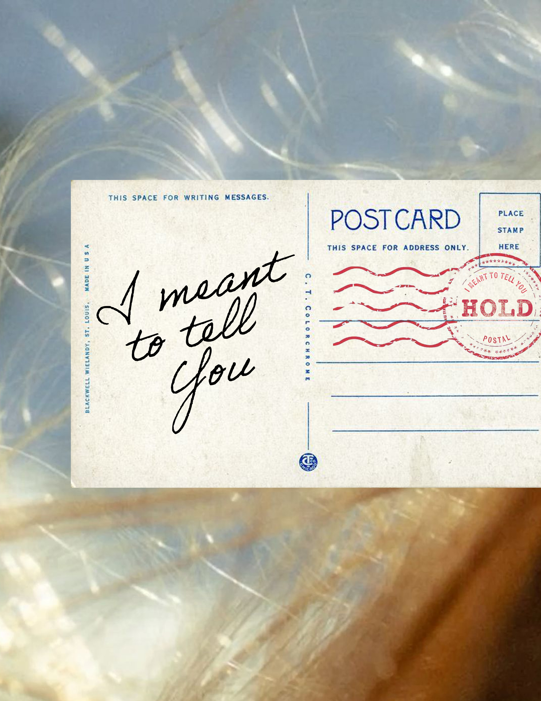

Projects from my media arts studies, exploring graphic design, visual arts, and creative concepts.

February 2026
I Meant to Tell You started with a question I couldn't stop thinking about: why do the things we most need to say so often go unsaid, and what happens to those words when they do? I was drawn to existing projects like The Unsent Project, which collected over a million anonymous typed confessions. But the anonymity bothered me. It felt like a safety net that flattened the most important part: the person behind the words. Handwriting is one of the most intimate things you can see from someone. It carries presence in a way typed text never can. From there I developed the concept of a specially designed postcard that people could pick up at public locations, write whatever they needed to say, and choose to send it or hold it. If they hold it, it stays on the wall where they wrote it, or eventually lives as a page in a published book. The project became a way of giving the unsaid a place in the world. View Project